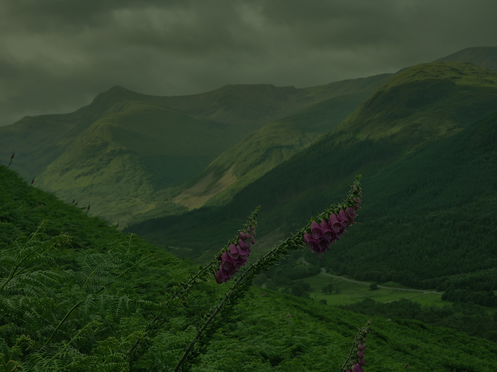
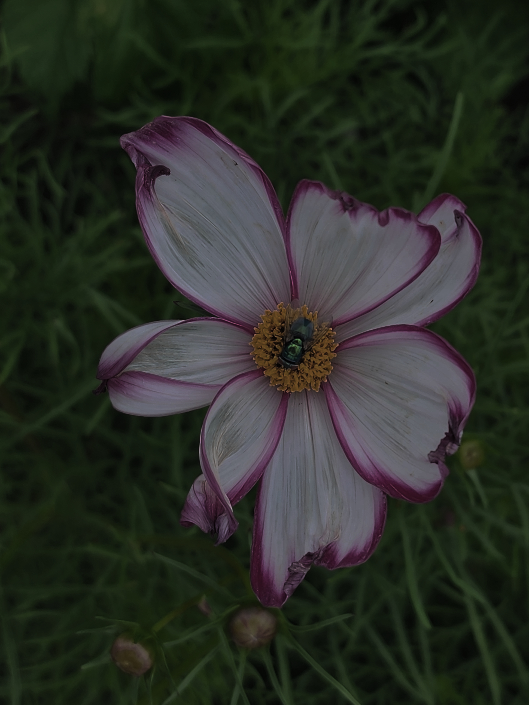
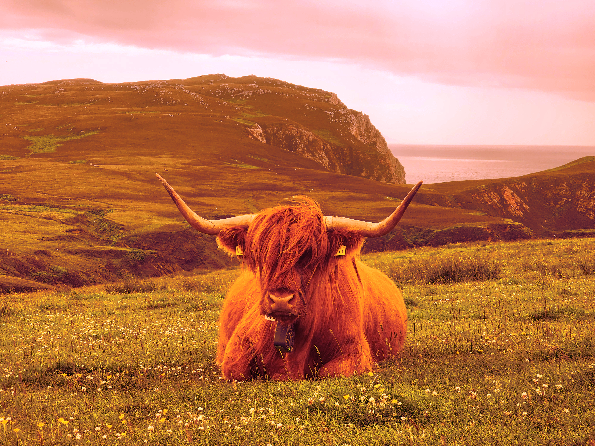

Bildredigering

Original Bild 1

Redigerad Bild 1:
I bild ett har jag med hjälp av GiMP gjort bilden ljusare
och givit den lite mer kontrast för att få fram motivet lite bättre. Jag vitbalanserade bilden,
ökade mättnaden och korrigerade kontrasten en smula för att få fram korrekt färger. Sedan har
jag ändrat färg på några av blommorna från lila till rött genom att markera objektet med path
tool, och sedan ändra nyansen genom colorize. Jag gjorde sedan samma sak med himmelen för att få
den att ändra kulör från grön till en mer behaglig och naturlig blå. Jag har även ökat
färgtemperaturen några grader för att få en finare lyster i bilden.

Original Bild 2

Redigerad Bild 2:
I bild två har jag först och främst vridit bilden så att
den skulle erhålla samma struktur som tidigare bild. Jag beskärde sedan bilden och använda samma
proportioner som tidigare bild för att skapa en symmetrisk enlighet. Sedan vitbalanserade jag
bilden och ökade ljusstyrkan rejält och även kontrasten till bilden så att allt såg klart och
tydligt ut, som på bild ett. Jag ökade sedan mättnaden och experimenterade med värmen för att få
bilden att se naturtrogen och färgrik ut.

Original Bild 3

Redigerad Bild 3:
I bild tre har jag först och främst korrigerat så att
proportionerna matchade de tidigare redigerade bilderna. Sedan korrigerade jag ljuset och
färgerna för att få dem så naturtrogna som möjligt. Eftersom bilden var filtrerad genom ett
röd/rosa filter så använde jag mig av grön reglering (motsattsfärg till röd) samt jobbade med
färgtemperaturen tills färger började se naturliga ut. Sedan vitbalanserade jag bilden och
stabiliserade mättnaden efter detta och reglerade kontrasten tills resultatet såg naturligt men
färgstarkt och skarpt ut som de tidigare bilderna. Till sist redigerade jag bort originalmärket
från tjurens båda öron genom att använda mig utav healing tool. Detta då tjurens öron var
håriga, vilket gör att detta verktyg går att använda alldeles utmärkt.